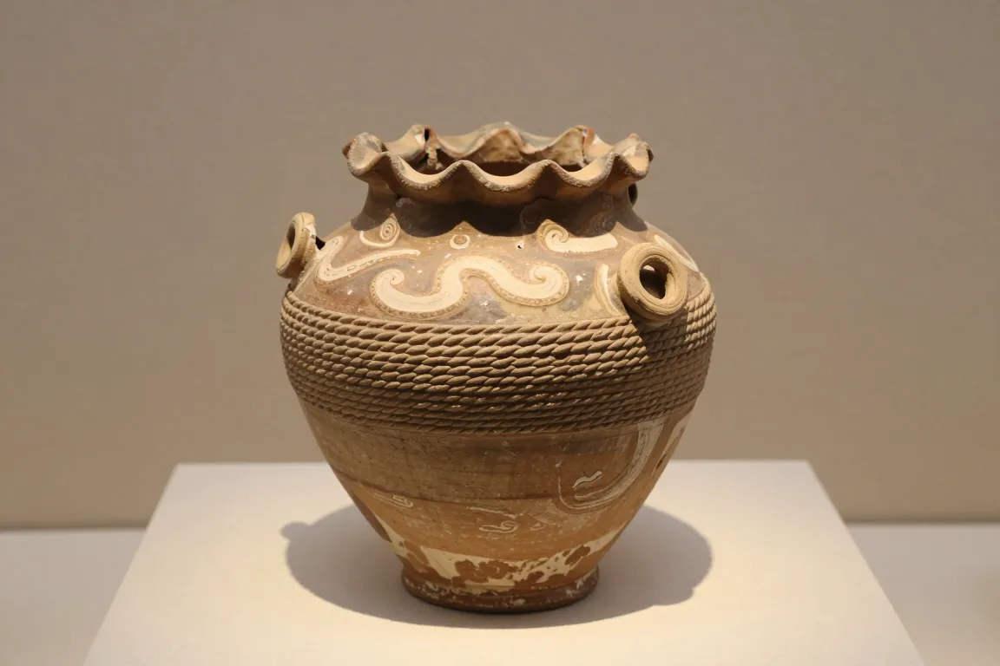

keramikk · c. 14000–300 BC · også: Jomon-gods, Snormerket keramikk, Flammestil-keramikk
Japans eldste keramikk. Jegere og sankere bygde en grov leire opp i dype potter med pølser, presset tvunnet snor inn i den våte veggen og brente pottene i et åpent bål.

Kjerneidé
En potte er en bygd og brent form som bærer spor av tilblivelsen: snoren, snittet og selve leiren er ornamentet.
Designprinsipper
Bygg potten av leirpølser på 15 til 25 mm og glatt bare innsiden.
Rull tvunnet snor over den våte ytterveggen for å gi en tett, jevn tekstur.
Hold potten dyp: høyden er én til to ganger munningens bredde.
Brenn potten i et åpent bål ved 600 til 900 °C, uten ovn og uten glasur.
Løft kanten på en seremoniell potte til en krone av leirløkker, hanker og pigger.
Del flaten i bånd: snormerket, innrisset og enkle soner som veksler.
La leirgodset stå i den brente fargen, fra gulbrun til mørk brun, med sorte brannskyer.
Antimønstre
En blank glasur eller en annen flytende overflate på veggen